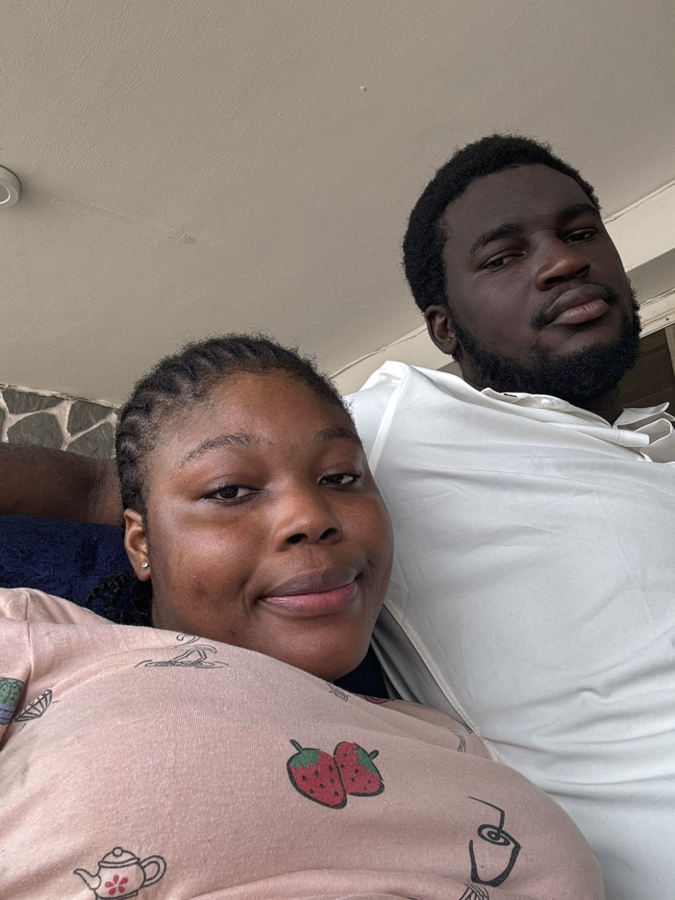
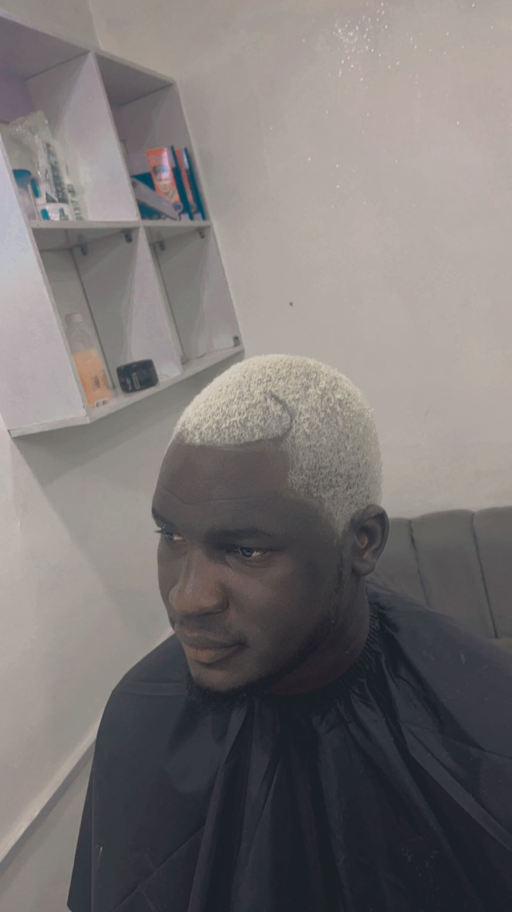
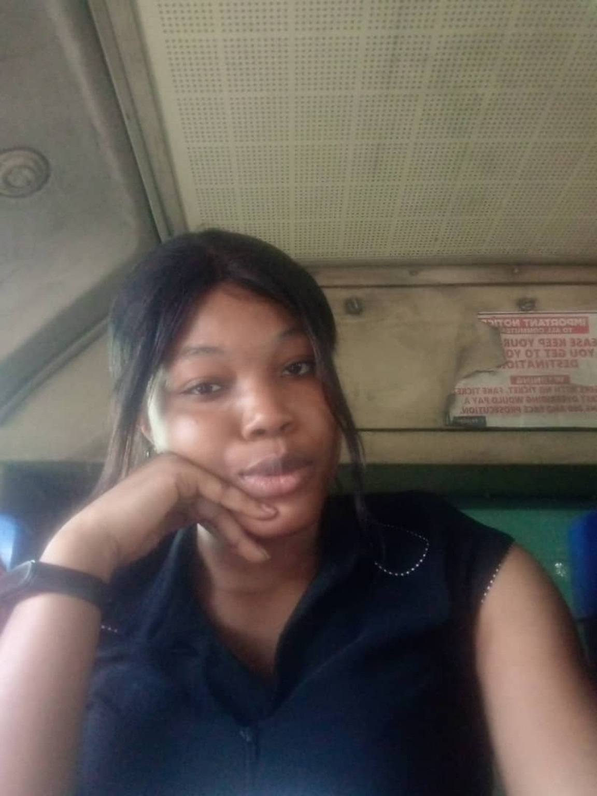
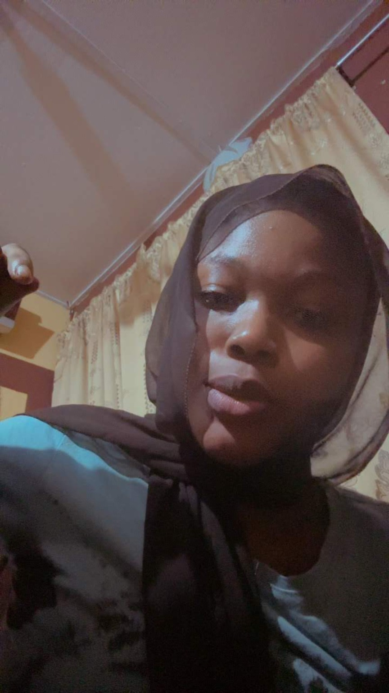
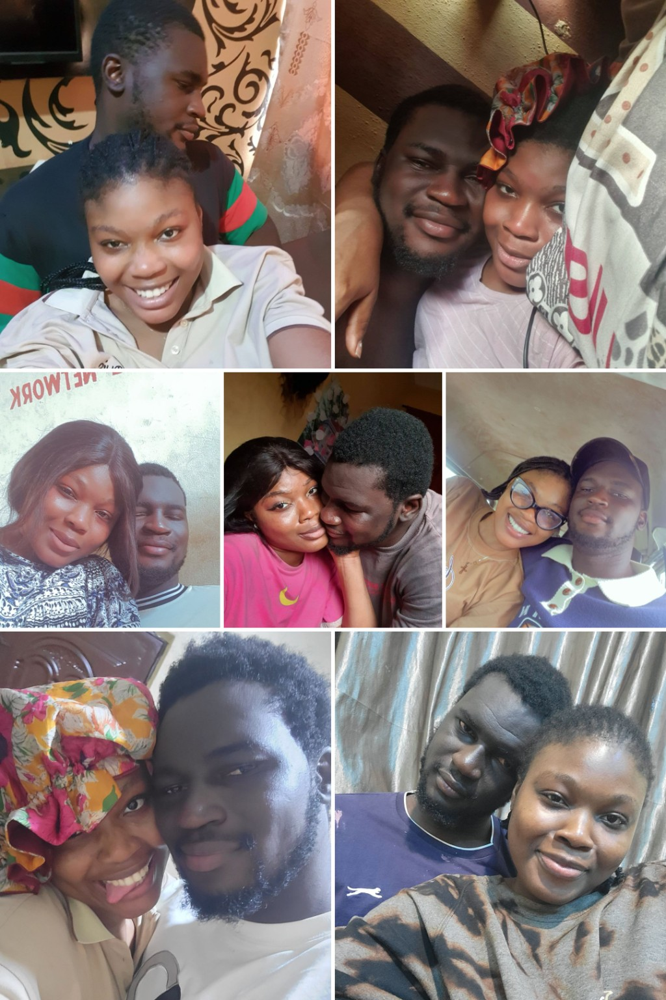
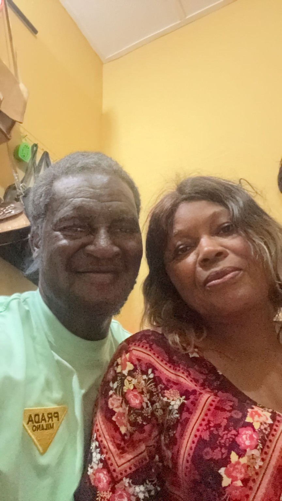

SIWES · Video calls
The Book of Mark
When you went home after your exam for SIWES, we were mostly on video calls. You taught me the Book of Mark. Distance didn't stop us from sharing pieces of ourselves.
Not to ask you for anything.
Just to tell you what I should what i learnt and hope i could have done better.


It was a very warm night. You and Tosin came back from Igi. You were in shorts, you sat down, and somehow you were just so free and comfortable around me.
I won't even lie — I wasn't feeling you like that at first. 😂 Then you asked me for perfume and I remember thinking, who is this one? I wanted to give you, but I held back because we had literally just met.
Funny how that little moment became something I could never have predicted.
We got closer through recommending movies. Then you disappeared for three days and I found out you were sick. I came to see you. Somewhere along the way there was that first kiss — still my best ever — and then I asked you to be my girlfriend.
And that was it.
Two people who had no idea how much of their lives they were about to share.
Some memories are big. Most of ours weren't. That's what makes some of them even more precious.




When you went home after your exam for SIWES, we were mostly on video calls. You taught me the Book of Mark. Distance didn't stop us from sharing pieces of ourselves.
Random pictures. Random moments. Nothing grand. Just us being us. We didn't know we were making memories. We were just living them.
Valentine's Day. We were in love. We wanted to grow old together. At that time, the future felt so real.
I came to your place because you had a paper and I wanted to keep you company. I was exhausted and somehow you ended up kissing me while I slept. 😂❤️
Even something as ordinary as going to campus felt different when I was going with you. I simply liked being around you.
This was me when we met — completely unaware that a girl I had just met on an ordinary warm night would become such a huge part of my life.
You had your convocation. We had planned a couples' picture, but a fight happened before it. I was proud of you then, and I still am. I wish I had been beside you the way we planned.
Eight little pieces of us. Some are photos, some are moving moments — all of them are reminders of a life we actually lived together. ❤️
“We didn't have to be perfect. We just had to keep learning how to love each other better.”
There are things I remember now and wish the man I was then had understood.
We would argue, you'd get hurt, you'd say you were done, and I'd run helter-skelter begging you to stay. You'd give me another chance. Looking back, I understand that saying “okay” didn't magically fix what had hurt you.
You came back tired. The room was smelling. There hadn't been water earlier, and you still had to clean the toilet. Somehow you still cooked jollof rice. Current me would have noticed, helped, and made that night easier for you. I'm sorry.
You were worried about the secretary. You were cleaning because you cared. I said something I had no right to say. Looking back, I understand your concern differently. I'm really sorry.
You were trying to buy clothes. We spent a long time in the boutique, I got frustrated, and even a man noticed and joked about women taking their time. I should have just been patient. My frustration shouldn't have become your burden. I'm sorry.
After the bike incident, you woke me at midnight to study the Word. I was sleepy and my mind wasn't there, and you got angry. But underneath that memory is something bigger: you were usually the one initiating prayer, Bible study and spiritual growth. I was following when I should have been taking responsibility too.
I got angry and shouted at you. I still remember how shocked Mum Alamin was to see me that way. I should have controlled myself and spoken to you with the respect I claimed you deserved. I'm sorry.
In front of GLT, I shouted again. I wish I could turn back time and handle that moment differently. I know better now.
I broke your earpiece. It wasn't intentional, but that doesn't erase the hurt. You cried and left for school. I should have taken the time to understand you better and been more careful with you. I'm very sorry.
The cake I got was what I could afford, and God knows that. But looking back, what matters more is how I handled that morning. I could have listened and been more mature instead of letting the moment become another wound.
You came back tired. You still went to get cake and everything. And somehow I wasn't fully present with you. I later tried to find you, took a bike, dealt with the bad network, and you cried. I wish I had understood then that if my queen was in that room, my attention should have been there too. I'm sorry.
I'm not naturally outspoken, and there were moments I wish I had spoken up for you sooner. With Tosin's sister, and in situations involving Annoiting, I didn't always show up the way I wish I had. Being your partner didn't mean agreeing with everything you did. It meant making sure you never had to wonder whether I was standing beside you.
You were playing table tennis with a friend and you lost. I can't even remember exactly what I said anymore. I only remember that you weren't happy about my comment. I should have praised you and made you feel good instead. I'm sorry.
There were times I was drowning in my own problems — debt, not knowing where my life was going, struggling to feed myself, feeling like I didn't even know myself anymore.
I was trying to survive and pretending I was okay. I didn't tell you everything because I knew how deeply you cared about me, and I didn't want to put you in that position.
But I understand something now: that was an explanation, not an excuse.
You were living through those difficult years with me too. I should have trusted you enough to be honest. I should have taken more responsibility. I should have led more. I should have shown up better.
During the course of our relationship, you gave me so many chances.
Sometimes I think the only person who can give someone as many chances as you gave me is God.
You weren't happy. I wasn't myself either. And instead of being honest about where I really was, I kept trying to force things.
Maybe if I had been completely honest with you, some things would have been different. Maybe they wouldn't have been. I'll never know.
But I know I should have been honest.
I'm sorry.
I'm not asking for another chance. I'm asking for forgiveness.
I won't lie to you either… I miss my friend.
For the last three months, I haven't really had anyone to talk to. And sometimes I just miss having you there — the person I could talk to about things, the person whose presence became so familiar to me.
And your POP… I honestly don't know much about your life anymore. That's strange to me because there was a time when I wanted to know everything.
I wanted to do something for you, no matter how little. Not because my life suddenly became perfect. It hasn't.
But I won't lie to you — I'm better off than I was in January.
Champion,
I don't know exactly what this website will mean to you. Maybe you'll smile at some parts. Maybe some memories will hurt. Maybe you'll wonder why I remembered certain little things.
I remembered them because they were ours.
I wish I had taken more pictures. I wish I had taken you out more. I wish I hadn't waited for some perfect time or some perfect amount of money before deciding to make memories with you. I had something, even if it wasn't much, and I should have used it better.
I wish the man you got to experience had been the man I am learning to become now.
I'm not going to pretend I was a terrible person or that everything between us was bad. We loved each other. We laughed. We had ordinary days that became memories. And I hurt you too. Both things can be true.
So this isn't me rewriting our whole story and pretending it was perfect.
It's me finally being honest about the parts where I failed you.
I'm sorry for the shouting. I'm sorry for the impatience. I'm sorry for the times I didn't stand beside you. I'm sorry for the times I let you carry things I should have carried. I'm sorry for trying to force things when I wasn't even okay within myself.
And I'm sorry for all the little moments I didn't understand until much later.
Thank you for every chance. Every prayer. Every conversation. Every laugh. Every ordinary walk. Every picture. Every time you chose to stay a little longer.
I don't know what tomorrow looks like.
But I know I will carry what I learned from loving you.
“I can't change what happened. I can only become someone who understands it.”
— Felix
“Some people become part of your life quietly, and somehow leave fingerprints on almost everything you become.”
Made with honesty, memories, and a heart that knows better now.
Can we fall in love again? Clean up the mess we made, restart everything, and forget the past.
Let’s do it all over again, but this time, let’s do it right.
You’re my person, and I can’t do this without you.